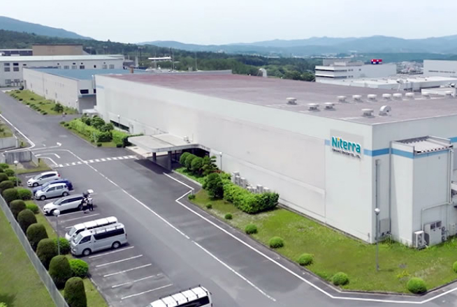

空気をきれいにするのは、
空気清浄機だけじゃない。
これからの時代は、澄風の
プラズマオゾンで
空気をきれいに。

DIFFERENCE 空気清浄機と「澄風」の違い


澄風はたったの1.7kg
2Lペットボトルより軽く
簡単にどこにでも持ち運べて、
最大20畳対応

FEATURES オゾンの特性
-
01
オゾンは自然界にも
存在する物質です -
02
菌・ウイルス・
においの原因物質に
直接作用します -
03
酸素に戻る
特性があるので、
安全性が高い
ただ、オゾンは濃度によっては人体への影響が懸念されるため、適切にコントロールする必要があります。
澄風なら安心
最適なオゾン濃度を
自動で制御
日本特殊陶業だからこそ
実現できる高度な技術です

東証プライム市場・名証プレミア市場上場
日本特殊陶業は、エンジン用スパークプラグ・排ガス用センサで世界No.1のシェアを誇る企業です。
澄風は日本特殊陶業が独自に開発した低濃度オゾン制御技術を組み込み、安全で効果的な濃度を自動で維持させることを可能にしました。
部品からすべて
日本製の安心設計

澄風は部品からすべて国内製造です。オゾン発生体には、腐食・汚れに強い日本特殊陶業独自開発のセラミック製プラズマリアクタを搭載。長期間安定してオゾンを発生させることが可能です。
澄風は第三者機関である
日本オゾン協会の 認定を
受けています

澄風は生産・品質管理体制、アフターサービス・クレーム処理体制、安全性や有効性を、第三者機関である日本オゾン協会により認定されています。